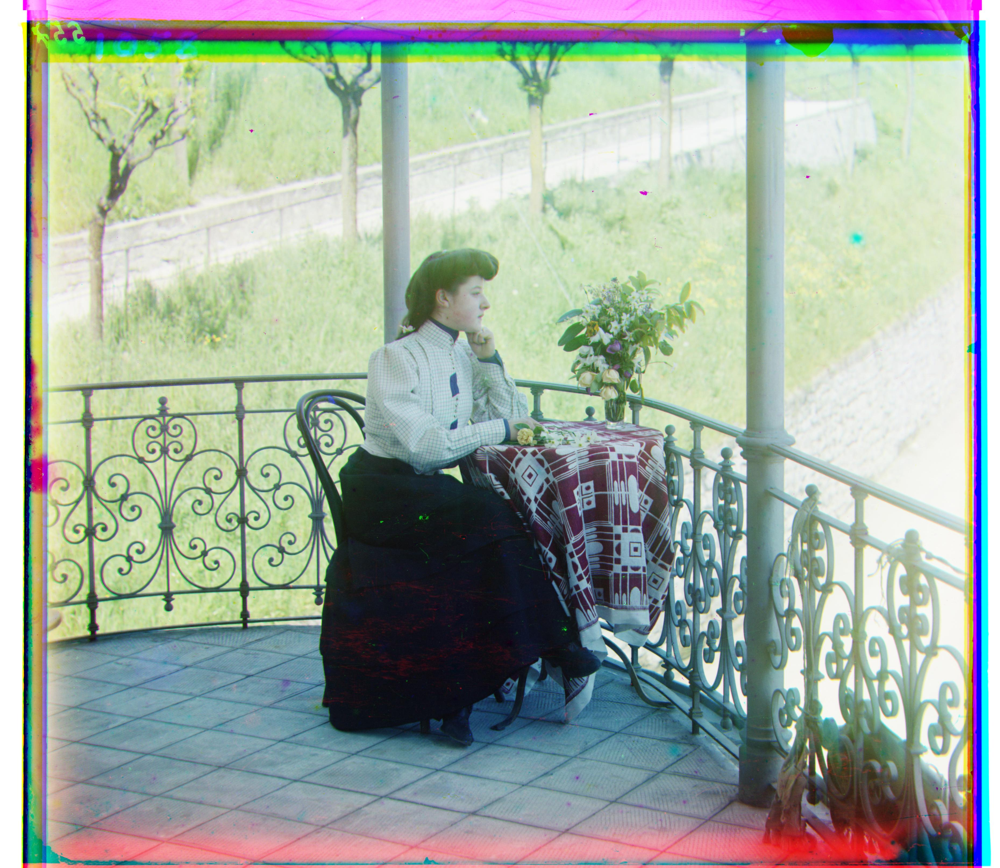
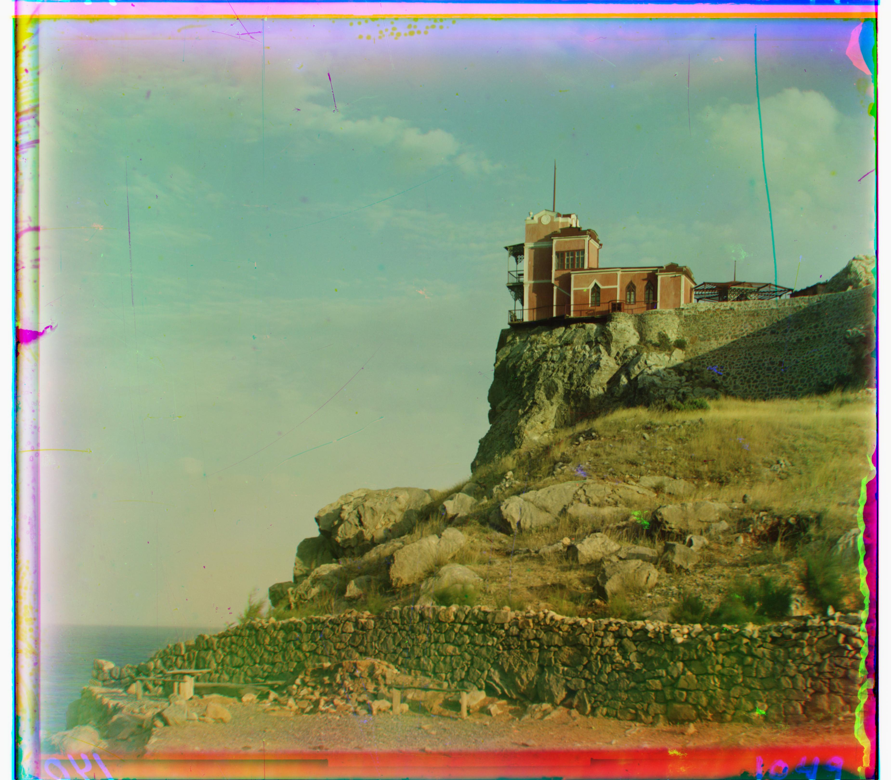
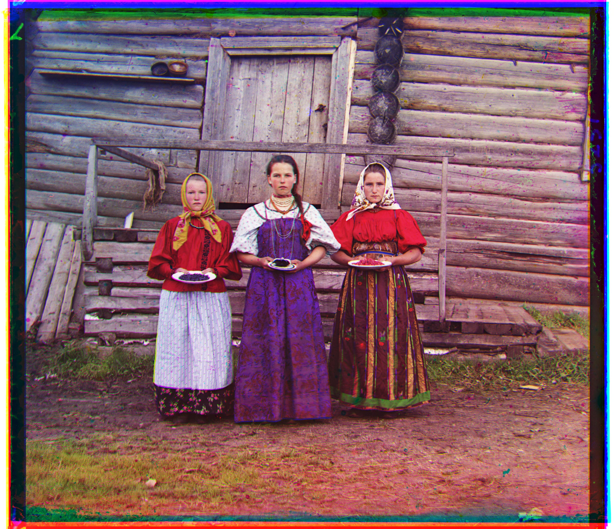
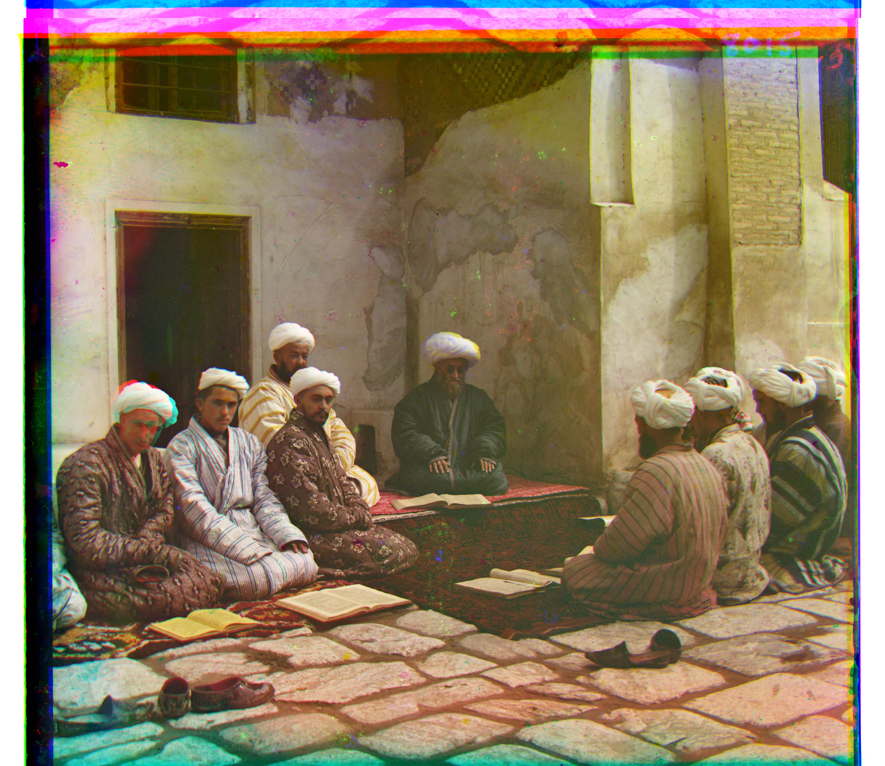
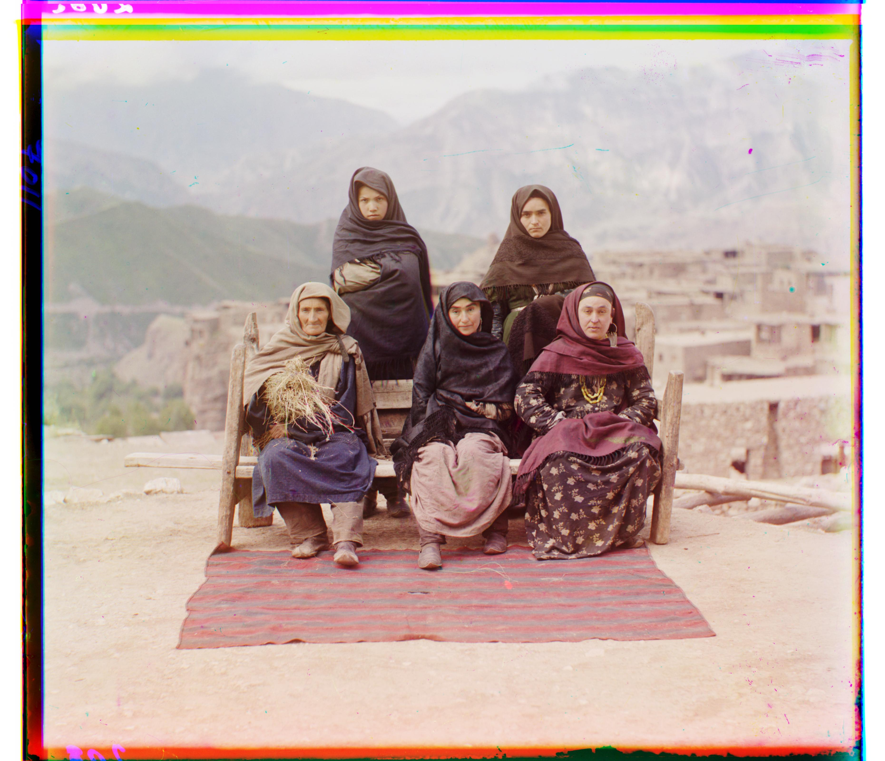

Project 1: Colorizing the Prokudin-Gorskii Photo Collection
Approach
First, I followed the structure of our skeleton code to read in an image, convert to double, compute height, and then separate an image into the BGR color channels. From there, I initially tried to implement the iterative approach for aligning the color plates, so I defined a function to loop over every possible shift within a range of -15 to 15 pixels in both x and y directions. For each shift, I then calculated L2 norm between the reference channel (blue) and the shifted channel (green or red) as my scoring metric and kept track of the lowest L2 norm score, and the corresponding shift with the best score while iterating. However, this wasn't very efficient especially for the larger .tif images, and it also resulted in somewhat blurry photo outputs which I saw some questions about on Ed that could also mean poor alignment, so I decided to implement the image pyramid approach instead.
For this approach, I tried scaling down the input image by half over the course of 3 levels, excluding one level for the original image. Next, starting from the smallest image, I drew on the iterative approach to find the best shift for the green and red channels relative to the blue channel. However, instead of searching over the full range of -15 to 15 pixels, I only searched within a smaller range of -2 to 2 pixels, since the images were smaller. After finding the best shift for each channel at the smallest level, I then scaled up the shifts by a factor of 2 to use as an initial guess for the next level. This process was repeated until reaching the original image size, where I again searched over a range of -15 to 15 pixels to find the final best shifts (using L2 norm as the evaluation metric). Additionally, I know in the project spec a suggestion to crop images to improve alignment was also mentioned, so in my algorithm I cropped around 10% of the borders of each image, although I think there may be a better way to do this based on image calculating image overlap? Definitely a future point of interest! Regardless, the best L2 norm scores and best shifts were updated similarly to the iterative strategy, which is how I ultimately aligned the images and displayed the final colorized image.
Feel free to look through the photos I aligned below!
Overview
Overall, this was a super insightful project! At first, I didn't really understand conceptually how we could colorize images based on these filtered color plates nor could I fathom how Prokudin-Gorskii was able to show the photos in color using different spotlights (I was amazed to read about his technique on the LOC website), but after getting hands-on experience with implementing an algorithmic version of his technique, I feel that I learned a lot not only just about image pyramid strategies but also about photography in general!
I also really loved the variety of the photos! Personally, I love portrait photography, so I was drawn to Prokudin-Gorskii's photos of people! When browsing the LOC collection, I filtered for "Group Portraits", and I was surprised by how many photos of ordinary people there were, although I suppose this could also make sense intuitively because of his methodology and travels. Super valuable to see a snapshot into the lives of all the different people back then, even for just a moment!
CS 180 Gallery
Cathedral

Green: (49, 24), Red: (103, 57)
Church

Green: (25, 4), Red: (58, -4)
Emir

Green: (38, 21), Red: (76, 35)
Harvesters

Green: (53, 14), Red: (112, 11)
Icon
Green: (41, -16), Red: (93, -29)
Italil

Green: (82, 11), Red: (178, 13)
Lastochikino

Green: (-3, -2), Red: (75, -9)
Lugano

Green: (3, 3), Red: (6, 3)
Melons

Green: (41, 17), Red: (90, 23)
Monastery

Green: (-3, 2), Red: (3, 2)
Self Portrait

Green: (5, 2), Red: (12, 3)
Siren

Green: (49, -6), Red: (96, -25)
Three Generations

Green: (79, 29), Red: (176, 36)
Tobolsk

Green: (59, 16), Red: (124, 13)
Additional Collection Photos
Peasant Girls

Green: (-16, 10), Red: (11, 17)
Students

Green: (76, -3), Red: (161, -20)
Tipy Dagestana (Group Photo)

Green: (16, 1), Red: (104, -1)